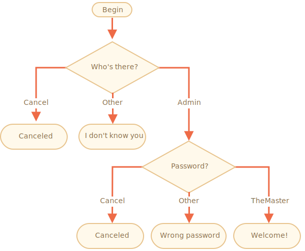

importance: 3
实现使用 prompt 进行登陆校验的代码。
如果访问者输入 "Admin"，那么使用 prompt 引导获取密码，如果输入的用户名为空或者按下了 key:Esc 键 —— 显示 "Canceled"，如果是其他字符串 —— 显示 "I don't know you"。
密码的校验规则如下：
流程图：

请使用嵌套的 if 块。注意代码整体的可读性。
提示：将空字符串输入，prompt 会获取到一个空字符串 ''。Prompt 运行过程中，按下 key:ESC 键会得到 null。
[demo]